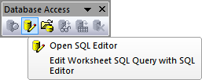

Daten aus einer Datenbank importieren
ImpData-from-DB
Zusammenfassung
In Origin können Sie den SQL-Editor verwenden, um Daten aus einer
Datenbank zu importieren.
Der SQL-Editor ist ein Editor zum direkten Schreiben und Bearbeiten
der SQL-Abfrage. Er ist sehr bequem in der Anwendung für Anwender, die
mit Datenbanken vertraut sind.
Anwender können mit ihm auch LabTalk-Variablen im SQL-Skript definieren.
In diesem Hilfsmittel kann die Datenbankverbindung als ODS-Datei
gespeichert werden und die Datenbankverbindung und Anfrage kann
für die zukünftige Verwendung als ODQ-Datei gespeichert werden.
Dieses Tutorial zeigt Ihnen, wie Sie die Verbindung zu einem SQL-Server
herstellen und die gewünschten Daten aus festgelegten Tabellen mit dem
SQL-Editor extrahieren. Die SQL-Datenbank, die hier verwendet wird,
ist die AdventureWorks-Datenbank. Einzelheiten dazu, wie eine
AdventureWorks-Datenbank verbunden wird, finden Sie auf der Webseite
von CodePlex.
 |
Die Schritte im Tutorial dienen nur Demonstrationszwecken, was Anwender
lokal mit ihrer Datenbank machen könnten. Bitte befolgen Sie die Schritte
nicht. |
Was Sie lernen
werden
Dieses Tutorial zeigt Ihnen, wie Sie:
- Daten aus einer Datenbank mit dem SQL-Editor importieren.
- Daten erneut importieren.
- LabTalk-Unterstützung im SQL-Editor
Schritte
Angenommen,
Sie haben bereits einen SQL-Server mit dem Namen AdventureWorks2008
auf einem Server noho eingerichtet.
Daten
mit dem SQL-Editor importieren
-
Öffnen Sie ein neues Projekt. Öffnen Sie den SQL-Editor, indem
Sie auf die Schaltfläche SQL-Editor öffnen auf der Symbolleiste
Datenbankzugriff klicken.
- 
- Jetzt stellen Sie die Verbindung zu der Datenbank AdventureWorks2008R2
her. Klicken Sie auf die Schaltfläche oder wählen Sie im Menü Datei: Neu...,
um den Dialog Datenverknüpfungseigenschaften aufzurufen.
-
Wählen Sie den Microsoft OLE DB Provider for SQL Server auf der Registerkarte
Provider. Klicken Sie auf die Schaltfläche Weiter >>.
-
Legen Sie auf der aktiven Registerkarte Verbindung die Serverinformationen
fest, einschließlich Servername, Benutzername und Passwort (ggf., in diesem
Beispiel labtalk2015) und Datenbankname. Klicken Sie auf Verbindung
testen, um sicher zu stellen, dass die Verbindung erfolgreich besteht.
-
Klicken Sie auf OK. Alle Tabellen in der Datenbank AdventureWorks2008R2
werden im linken Bedienfeld auf gelistet. Die Verbindungszeichenkette
befindet sich auf der Registerkarte Nachricht
Alternative: Wenn Sie bereits eine
Verbindungszeichenkette haben, können Sie Datei: Verbindungszeichenkette
bearbeiten im Menü wählen, um den Dialog Verbindungszeichenketteneditor
zu öffnen. Geben Sie die folgende SQL-Zeichenkette ein und klicken Sie
dann auf OK, um die Verbindung herzustellen:
Provider=SQLOLEDB.1; Password=labtalk2015; Persist Security Info=TRUE; USER ID=CONNECT; Initial Catalog=AdventureWorks2008; DATA SOURCE=noho
- Wählen Sie Datei: Verbindung speichern unter, um die Datenquelldatei
als MyDataSource.ods zu speichern.
-
Jetzt extrahieren Sie Daten aus 9 Tabellen, um die Mitarbeiterliste
zu erstellen. Sie können das SQL-Skript neu schreiben. Klicken Sie doppelt
auf den Knoten im linken Bedienfeld. Sie erhalten Unterstützung beim Hinzufügen
der Tabelle und des Feldnamens im Editor. Kopieren Sie vorerst die folgenden
SQL-Skripte in das rechte Bedienfeld.
SELECT e.BusinessEntityID, p.Title, p.FirstName, p.MiddleName, p.LastName, p.Suffix, e.JobTitle, pp.PhoneNumber, pnt.Name AS PhoneNumberType, ea.EmailAddress, p.EmailPromotion, a.AddressLine1, a.AddressLine2, a.City, sp.Name AS StateProvinceName, a.PostalCode, cr.Name AS CountryRegionName, p.AdditionalContactInfo FROM HumanResources.Employee AS e INNER JOIN Person.Person AS p ON p.BusinessEntityID = e.BusinessEntityID INNER JOIN Person.BusinessEntityAddress AS bea ON bea.BusinessEntityID = e.BusinessEntityID INNER JOIN Person.Address AS a ON a.AddressID = bea.AddressID INNER JOIN Person.StateProvince AS sp ON sp.StateProvinceID = a.StateProvinceID INNER JOIN Person.CountryRegion AS cr ON cr.CountryRegionCode = sp.CountryRegionCode LEFT OUTER JOIN Person.PersonPhone AS pp ON pp.BusinessEntityID = p.BusinessEntityID LEFT OUTER JOIN Person.PhoneNumberType AS pnt ON pp.PhoneNumberTypeID = pnt.PhoneNumberTypeID LEFT OUTER JOIN Person.EmailAddress AS ea ON p.BusinessEntityID = ea.BusinessEntityID WHERE sp.Name='Washington' ORDER BY e.BusinessEntityID
-
Klicken Sie auf die Schaltfläche Ergebnisdaten in Vorschau zeigen
 , um die Daten in der Vorschau zu sehen. Wenn die Vorschau
gut aussieht, klicken Sie auf die Schaltfläche Daten in Arbeitsblatt
importieren
, um die Daten in der Vorschau zu sehen. Wenn die Vorschau
gut aussieht, klicken Sie auf die Schaltfläche Daten in Arbeitsblatt
importieren  , um diese Daten zu importieren. Sobald sie importiert wurden,
wird das Arbeitsblatt mit dem Datenblatt verbunden und ein gelbes Symbol
wird oben links im Arbeitsblatt angezeigt.
, um diese Daten zu importieren. Sobald sie importiert wurden,
wird das Arbeitsblatt mit dem Datenblatt verbunden und ein gelbes Symbol
wird oben links im Arbeitsblatt angezeigt.
- Wählen Sie Datei: Verbindung und Anfrage speichern unter
im Menü, um die Verbindung und die Abfrage als MyQuery.odq zu speichern.
Schließen Sie den SQL-Editor.
Aus Datenbank
erneut importieren
Nachdem Sie den SQL-Editor zum Importieren von Daten aus einer
Datenbank verwendet haben, werden die Verbindung und die Abfrage automatisch
im Arbeitsblatt gespeichert. Sie können jederzeit auf die Schaltfläche
Daten importieren auf der Symbolleiste Datenbankzugriff klicken, um
Daten aus der Datenbank erneut zu importieren. Versuchen Sie die folgenden
Schritte.
- Löschen Sie einige Daten im Arbeitsblatt mit Datenbankverbindung.
- Klicken Sie auf die Schaltfläche Daten importieren . Die Daten sollten zurück sein.
- Um die Datenbank in eine neue Arbeitsmappe zu importieren, wählen
Sie im Menü Datei: Datenbankimport. Alle gespeicherten ODQ-Dateien
werden hier aufgelistet.
- Wählen Sie MyQuery.ODQ. Es wird eine neue Arbeitsmappe mit Daten
aus der Datenbank erstellt.
 |
- Wenn Ihre Datenbank groß ist, wird die gespeicherte Datei der Arbeitsmappe
groß sein. Sie können Worksheet: Worksheet löschen wählen, um die
Daten zu löschen und dann die Arbeitsmappe zu speichern. Später können
Sie die Arbeitsmappe laden und auf die Schaltfläche Vorschau der Ergebnisdaten
zeigen klicken, um eine Vorschau für 50 Zeilen der Daten zu zeigen,
oder Sie klicken auf die Schaltfläche Daten importieren , um aus der Datenbank zu importieren.
- Wenn Sie die Abfrage ändern müssen, klicken Sie bei aktivem Arbeitsblatt
auf die Schaltfläche SQL-Editor
 . .
|
LabTalk-Unterstützung
im SQL-Editor
In den obigen Beispielen wurden nur die Daten für den Bundesstaat Washington
importiert. Es handelt sich jedoch um einen Code. Wenn Sie eine Abfrage
für einen anderen Bundesstaat durchführen möchten, müssen Sie die Abfrage
ändern. In diesem Abschnitt erfahren Sie, wie eine Labtalk-Zeichenkettenvariable
für einen Bundesstaatsnamen definiert wird, so dass es in Zukunft einfacher
ist, die Abfrage zu ändern.
- Öffnen Sie ein neues Projekt. Wählen Sie Datei: Datenbankimport:
MyQuery.ODQ, um die Daten direkt in das Arbeitsblatt zu importieren.
- Klicken Sie auf die Schaltfläche SQL-Editor öffnen , um den SQL-Editor zu öffnen.
- Wählen Sie Anfrage: LabTalk..., um den Dialog Einstellungen
der Unterstützung von LabTalk zu öffnen und eine LabTalk-Zeichenkettenvariable
hinzuzufügen.
- Aktivieren Sie das Kontrollkästchen Substitution durch LabTalk
(%,$) aktivieren.
-
Geben Sie das Skript unten ein, um eine LabTalk-Zeichenkettenvariable
strCond zu definieren, die Washington State repräsentiert.
string strCond$ = "Washington";
in dem Feld Skript vor Anfrage ein. Klicken Sie auf OK.
-
Ändern Sie am Ende des SQL-Skripts im rechten Bedienfeld die Anweisung
WHERE in
WHERE sp.name = '%(strCond$)'
-
Klicken Sie auf die Schaltfläche
 , um eine Vorschau der SQL-Abfragezeichenkette
mit substituierter LabTalk-Variable im Feld des SQL-Editors anzuzeigen.
, um eine Vorschau der SQL-Abfragezeichenkette
mit substituierter LabTalk-Variable im Feld des SQL-Editors anzuzeigen.
- Klicken Sie auf die Schaltfläche Daten in Arbeitsblatt importieren
, um diese Daten zu importieren. Schließen Sie den Dialog
und wählen Sie Ja, um die SQL-Abfrage erneut im Arbeitsblatt zu
speichern.
- Von nun an müssen Sie nur den Wert für strCond$ im Dialog Einstellungen
der Unterstützung von LabTalk ändern, um den Namen des Bundesstaats
zu ändern. Die SQL-Abfrage muss nicht mehr geändert werden.